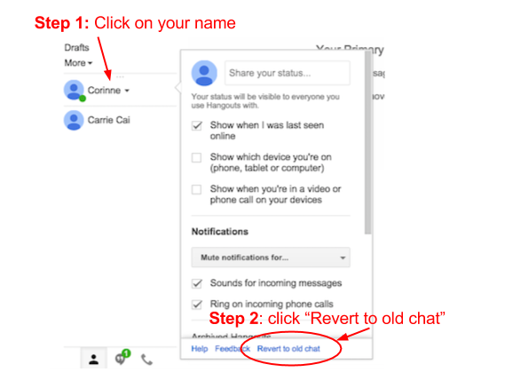

About WaitChatter
Wait-Learning
People often want to learn a language but can't find time. WaitChatter is based on the idea of wait-learning. It makes use of micro-moments when you're waiting for your IM buddy to respond, to teach you a foreign language.
What language does WaitChatter teach?
WaitChatter currently teaches basic vocabulary in Spanish and French, and assumes your native language is English, but we hope to support other languages in the future.
What information does WaitChatter access?
For your privacy, this public version of WaitChatter does not pull any vocabulary words from your chat conversations, and does not log any content from your chats. It does track how many times you answer the learning exercises and what vocabulary words you have answered correctly so that it can select the best word to quiz you on next.
Publications
Read more about WaitChatter in our published paper:
Wait-Learning: Leveraging Wait Time for Second Language Acquisition
Carrie J. Cai, Philip J. Guo, James R. Glass, and Robert C. Miller.
ACM Conference on Human Factors in Computing Systems (CHI) 2015
Contact
WaitChatter was built by Carrie Cai and is part of ongoing research in the User Interface Design group at MIT CSAIL.
Please email waitchatter@csail.mit.edu with any questions or concerns. If you would like to be informed of future improvements to WaitChatter, sign up here.
Help
WaitChatter isn't appearing under my chatbox.
1) Are you currently using Google Hangout?
To use WaitChatter, revert to GChat:

2) Do you have chat-related Google Labs items?
Using a Google Labs items that changes the appearance of your GChat could interfere with WaitChatter appearing correctly.
3) Is your chatbox maximized ("popped out" of the screen)?
WaitChatter only works on chatboxes that haven't been maximized.
WaitChatter's keyboard shortcut (⌘J or Alt-J) isn't working.
You might have an outdated version of WaitChatter or multiple WaitChatter extensions. First, go to chrome://extensions by typing it into your url box. In the bottom right corner of the page, click "Keyboard shortcuts." Focus into this box, then hit ⌘J (Mac) or Alt-J (Windows/Linux) on your keyboard.
"Click to learn" isn't triggering a learning exercise.
To avoid distracting you, WaitChatter prevents exercises from triggering in multiple chatboxes, so you might already have another active exercise in another chatbox. If that's not the case, refreshing the page may fix the problem.